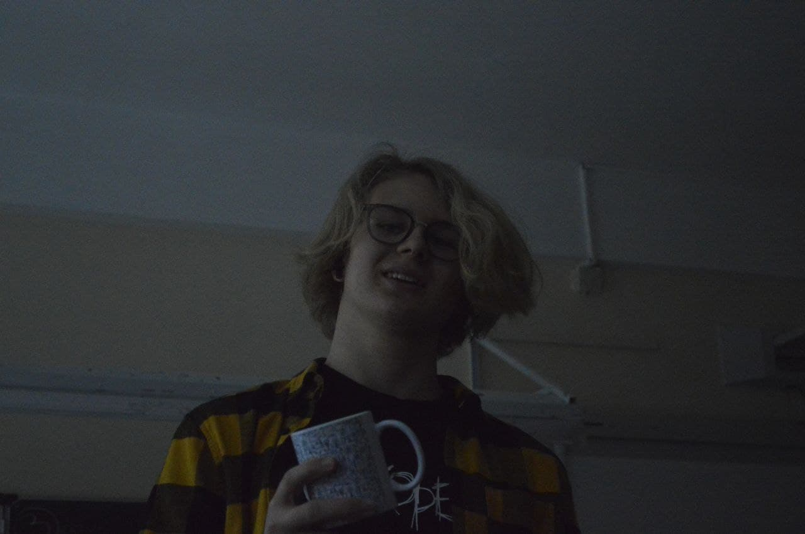

-
Мой профиль на Github:
izlatin
-
Мой проект для Института истории СПб при Российской академии наук:
Летописная база
Там все может быть далеко не так красиво и элегантно, однако ради того, чтобы все именно так и было, я и хочу поступить в Лицей++ на Django!